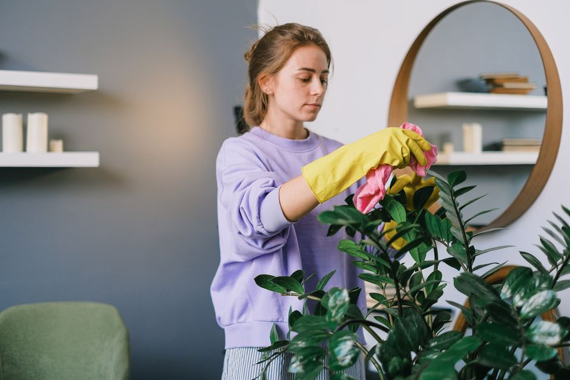

Comment nettoyer et polir votre plantarium pour maintenir sa beauté

Photo: SHVETS production / Pexels
Un plantarium (un terrarium ou un petit contenant vitré avec des plantes) reste beau quand le verre est propre et que les feuilles mortes sont retirées à temps. Il n'a pas besoin d'être « poli » : un nettoyage doux suffit, et certains gestes courants peuvent même l'abîmer.
À éviter
- le papier de verre, la ponceuse ou tout produit abrasif sur le verre : ils le rayent ;
- les produits d'entretien parfumés, l'alcool et les désinfectants près des plantes ;
- les sprays sur les plantes elles-mêmes.
Nettoyer le verre
Retirez le couvercle s'il y en a un. Essuyez l'extérieur avec un chiffon doux ou en microfibre légèrement humide. Pour l'intérieur, utilisez un chiffon ou une éponge douce fixée au bout d'une tige, de l'eau tiède et, au besoin, une goutte de savon doux, sans laisser couler de produit sur le substrat. Rincez avec un chiffon propre et de l'eau claire, puis séchez.
Soigner les plantes
Retirez les feuilles jaunes ou brunes avec de petites pinces ou des ciseaux propres : elles pourrissent vite dans un milieu humide. Dépoussiérez les feuilles avec un pinceau doux. Ne vaporisez rien dessus.
Surveiller le substrat
Repérez les moisissures blanches ou grises à la surface. Retirez-les avec une cuillère propre et laissez plus d'air circuler en ouvrant le plantarium quelques heures. Si elles reviennent, c'est le plus souvent qu'il y a trop d'eau.
Rythme d'entretien
- Chaque semaine : un coup d'œil, retirer les feuilles mortes.
- Chaque mois : essuyer le verre.
- Tous les quelques mois : vérifier l'humidité du substrat et aérer.
Si le plantarium est placé là où un chat ou un chien peut le renverser ou en grignoter le contenu, installez-le en hauteur : plusieurs plantes de terrarium sont irritantes ou toxiques pour eux.
En tant que Partenaire Amazon, je réalise un bénéfice sur les achats remplissant les conditions requises.